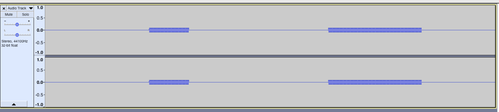
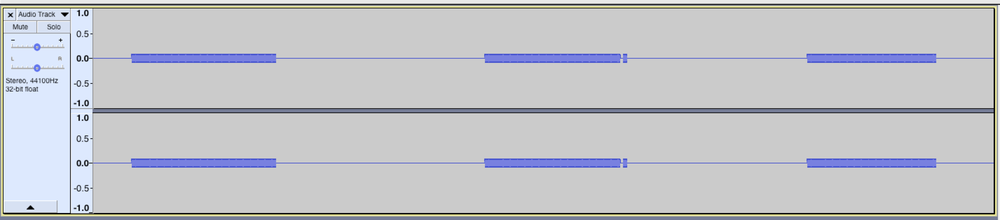

Disable web audio | Enable web audio
Instructions: Click "Switch source" to start playback and then switch between the sine wave AAC and the silent MP3 sources.
Expected: audio smoothly goes between the silence and the sine wave.

Actual: sometimes, when using web audio, when switching from AAC to MP3 there's a short gap in playback,
followed by a short burst of audio, followed by silence again.
